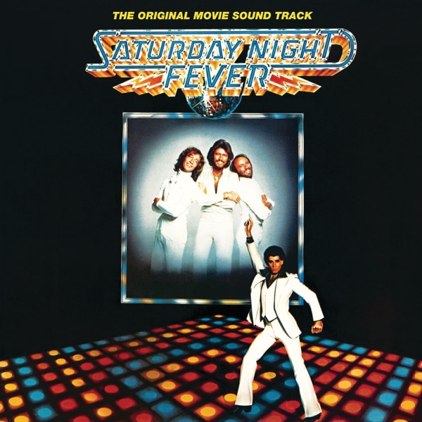

Saturday Night Fever (The Original Movie Sound Track)
Various
Upgrade idea: This original Capitol-mastered pressing by Wally Traugott is the definitive edition — hard to beat. A 2023 Capitol/UMe half-speed remaster exists if you want a cleaner modern pressing, but this original is a keeper.
- Original release
- 1977
- Pressing year
- 1977
- Country
- US
- Format
- 2× Vinyl LP, Album, Compilation (Keel Pressing)
- Label / Cat#
- RSO – RS-2-4001 / RSO – 2658 123
- Genres
- Electronic, Funk / Soul, Pop, Stage & Screen
- Styles
- Soundtrack, Disco
- Discogs release
- 3936647
- Discogs master
- 23443
- Apple Music
- Saturday Night Fever (The Original Movie Soundtrack)
- Wikipedia
- Saturday Night Fever (The Original Movie Sound Track)
Production notes
Tracklist (Discogs)
| A1 | Stayin' Alive | 4:43 |
| A2 | How Deep Is Your Love | 4:03 |
| A3 | Night Fever | 3:33 |
| A4 | More Than A Woman | 3:15 |
| A5 | If I Can't Have You | 2:57 |
| B1 | A Fifth Of Beethoven | 3:01 |
| B2 | More Than A Woman | 3:16 |
| B3 | Manhattan Skyline | 4:43 |
| B4 | Calypso Breakdown | 7:50 |
| C1 | Night On Disco Mountain | 5:12 |
| C2 | Open Sesame | 3:59 |
| C3 | Jive Talkin' | 3:44 |
| C4 | You Should Be Dancing | 4:15 |
| C5 | Boogie Shoes | 2:16 |
| D1 | Salsation | 3:50 |
| D2 | K-Jee | 4:15 |
| D3 | Disco Inferno | 10:52 |
Tracklist (Apple Music)
| 1 | Stayin' Alive (From "Saturday Night Fever" Soundtrack) | 4:44 |
| 2 | How Deep Is Your Love (From "Saturday Night Fever" Soundtrack) | 4:03 |
| 3 | Night Fever (From "Saturday Night Fever" Soundtrack) | 3:31 |
| 4 | More Than a Woman (From "Saturday Night Fever" Soundtrack) | 3:16 |
| 5 | If I Can't Have You | 2:58 |
| 6 | A Fifth of Beethoven | 3:02 |
| 7 | More Than a Woman | 3:16 |
| 8 | Manhattan Skyline | 4:43 |
| 9 | Calypso Breakdown | 7:49 |
| 10 | Night On Disco Mountain | 5:12 |
| 11 | Open Sesame | 3:59 |
| 12 | Jive Talkin' | 3:43 |
| 13 | You Should Be Dancing | 4:13 |
| 14 | Boogie Shoes | 2:16 |
| 15 | Salsation | 3:50 |
| 16 | K-Jee | 4:13 |
| 17 | Disco Inferno | 10:50 |
Personnel & credits
- Susan Herr — Artwork [Prepared By]
- Tom Nikosey — Artwork [Prepared By]
- Bill Oakes — Compiled By, Supervised By [Album]
- Dan Wallin — Engineer
- Karl Richardson — Engineer
- Larry Miles — Engineer
- Ray Thompson — Engineer
- Steve Pouliot — Engineer
- Ed Mashal — Engineer [Assistant; Miami]
- Nick Blagona — Engineer [Assistant; Quebec]
- Jerry Crawford — Engineer [Assistant]
- Jim Nau — Engineer [Assistant]
- John Blanche — Engineer [Assistant]
- Michel Marie — Engineer [Assistant]
- Tyrone Williams — Engineer [Assistant]
- Wally Traugott — Lacquer Cut By
- Wally Traugott — Mastered By
- Francesco Scavullo — Photography By [Bee Gees]
- Charles William Bush — Photography By [Tavares]
- Norman Seeff — Photography By [Yvonne Elliman]
Identifiers
- Matrix / Runout: (RS-2-4001-A) (Side A label)
- Matrix / Runout: (RS-2-4001-B) (Side B label)
- Matrix / Runout: (RS-2-4001-C) (Side C label)
- Matrix / Runout: (RS-2-4001-D) (Side D label)
- Matrix / Runout: B / [Union Jack flag symbol] RS-2-4001-AS KW-2 MASTERED BY CAPITOL Wally (Side A runout)
- Matrix / Runout: B3 [Union Jack flag symbol] RS-2-4001-BS KW 1 MASTERED BY CAPITOL Wally (Side B runout)
- Matrix / Runout: A - eight K L RS-2-4001-CS REV.1 KW 1 MASTERED BY CAPITOL Wally (Side C runout)
- Matrix / Runout: B [Union Jack flag symbol] RS-2-4001-DS KW-2 MASTERED BY CAPITOL Wally (Side D runout)
- Other: (Intl.# 2658 123) (All labels)
- Other: (Ind. Intl.# 2479 199) (Side A & B label)
- Other: (Ind. Intl.# 2479 200) (Side C & D label)
- Other: 1298 (Spine price code)
- Rights Society: ASCAP
- Rights Society: BMI
Notes
This version is the Keel pressing plant variation with the shorter 'studio' version of track C3 "Jive Talkin'". It can be identified by the runout groove etchings and by the label typesetting. For example, where "Record" and "Side" are printed on the right hand side of the label and catalog numbers (Domestic and International) appear on the left hand side.
© 1977 RSO Records, Inc.
Manufactured/marketed by RSO Records, Inc. Distributed by Phonodisc.
A1 to A4, Recorded at Chateau D'Herouville, France
Overdubs and remixing at Criteria Studios Miami, Florida.
A5, B2 Recorded at The Mom & Pops Company Store, Studio City.
B3, C1, D1 Recorded at The Burbank Studios, Burbank, California.
C3 Recorded at Criteria Studios Miami, Florida.
C4 Recorded at Criteria Studios Miami, Florida and Le Studio, Quebec.
Mastered at Capitol records, Hollywood.
Printed in U.S.A.
Gatefold cover with printed inner sleeves with info.
Three codes appear on the back cover's top right corner.
The definitive disco album — Bee Gees dominated, 15× platinum, 24 weeks at #1. Original 1977 US RSO pressing (RS-2-4001). Mastered at Capitol by Wally Traugott (MASTERED BY CAPITOL / Wally in runout), with UK flag symbol in the deadwax. KW stamper. A genuine first pressing cut by one of Capitol’s legendary mastering engineers.